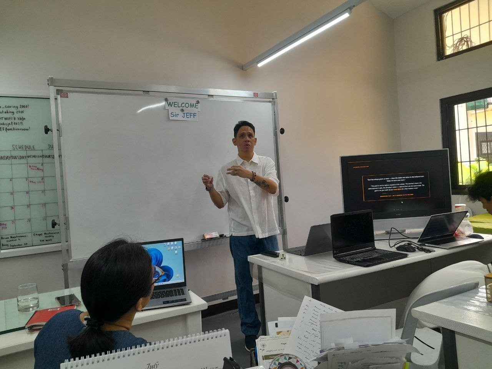
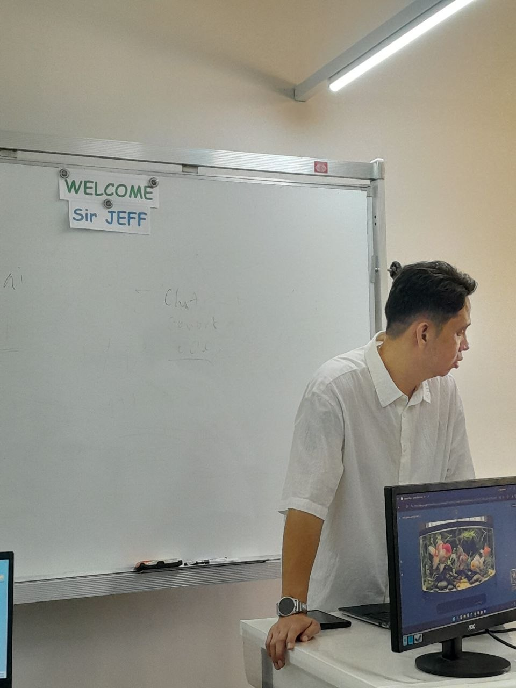
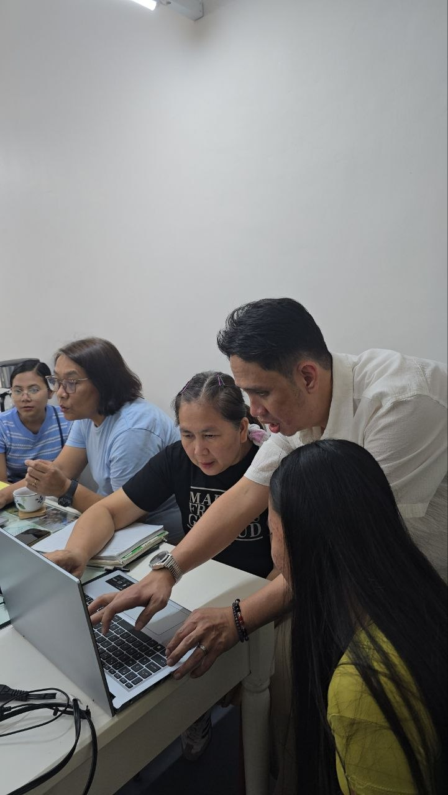
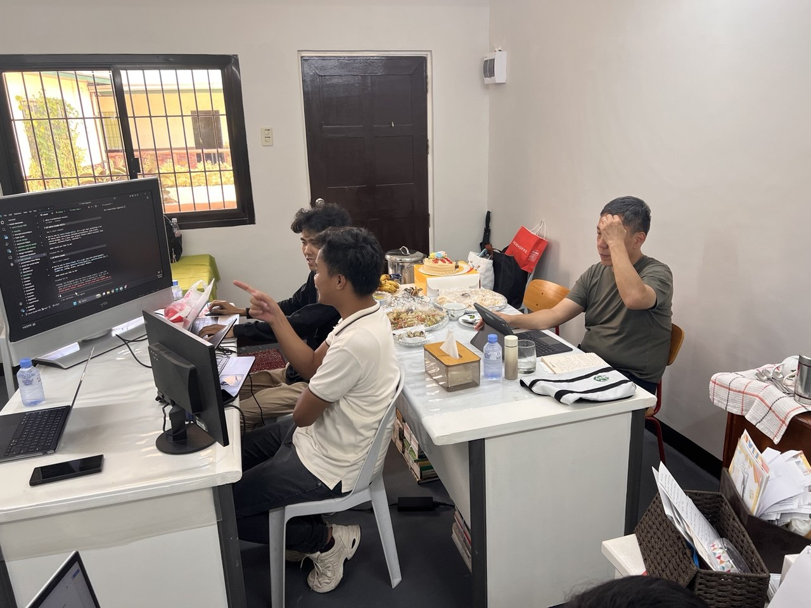
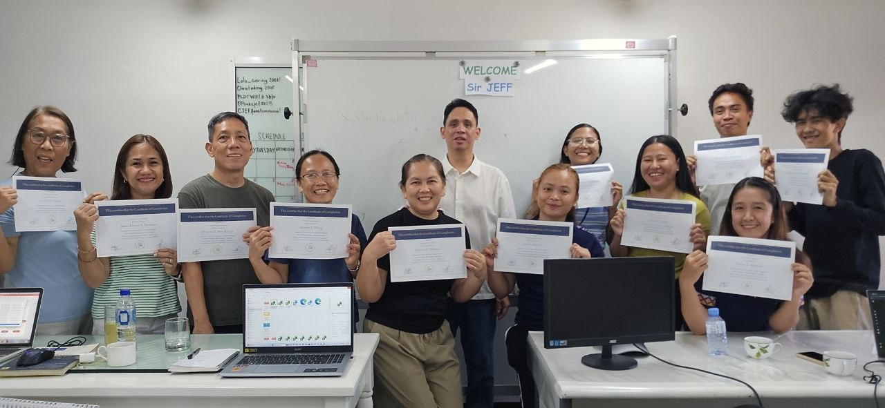

REAL STORY · CJEF
01HINDI ITO DEMO. AKTWAL NA AI TRAINING ITO.
Noong July 6, dinala namin ang libreng AI tools sa totoong classroom.

Noong July 6, dinala namin ang libreng AI tools sa totoong classroom.

Pero lahat may totoong trabahong puwedeng gawing mas malinaw at mas maayos.

Ginamit nila mismo ang Claude at Gemini para sa lesson plans, parent updates, at school communications.


Kailangan lang ng tamang gabay, totoong practice, at lakas ng loob magsimula.